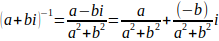
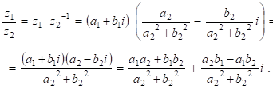

определение комплексных чисел
В упорядоченном поле квадрат любого ненулевого элемента положителен. Следовательно, в поле действительных чисел квадрат любого действительного числа отличен от – 1.
Определение 1.1. Полем комплексных чисел называется комплексное расширение поля действительных чисел.
Пусть R = < R, +, -, *, 1 > ‑ поле действительных чисел. Пусть C ‑
поле комплексных чисел, комплексное расширение поля R. Основное множество поля
 обозначим через C. Элементы множества C называются комплексными числами.
Обозначим через i такое комплексное число, что i 2 = -1 и любое комплексное
число z из C можно представить в виде z = a + bi, где a, b ∈ R.
Это представление называется алгебраической формой числа z. Число i называется мнимой
единицей поля комплексных чисел.
обозначим через C. Элементы множества C называются комплексными числами.
Обозначим через i такое комплексное число, что i 2 = -1 и любое комплексное
число z из C можно представить в виде z = a + bi, где a, b ∈ R.
Это представление называется алгебраической формой числа z. Число i называется мнимой
единицей поля комплексных чисел.
2) (a + bi) + (c + di) = (a + c) + (b + d)i ;
3) -(a + bi) = (-a) + (-b)i;
4) (a + bi)(c + di) = (ac - bd) + (ad + bc)i ;
5) если a + bi ≠ 0, то .
Доказательство. Пусть a + bi = c + di. Если b = d, то a = c. Если же b ≠ d, то и , что невозможно. Следовательно, случай, когда b ≠ d, невозможен. Поскольку C – поле, то имеют место равенства 2, 3, 4 из теоремы 1.1.
Пусть a + bi ≠ 0. В силу 1 равенства из теоремы 1.1, a ≠ 0
или b ≠ 0 и a - bi ≠ 0. Так как произведение любых двух
ненулевых элементов поля C отлично от нуля, то (a + bi)(a - bi) = a
2 + b 2 ≠ 0. Следовательно,

Определение 1.2. Числовым полем называется любое подполе поля комплексных чисел.
Любое числовое поле содержит подполе рациональных чисел. В самом деле, пусть F = < F, +, -, *, 1 > ‑ любое числовое поле. Так как 0, 1 ∈ F и множество F замкнуто относительно операций +, -, то n = 1 + ... + 1 ∈ F и -n ∈ F. Следовательно, F содержит все целые числа. Множество F замкнуто относительно деления и, значит, содержит все элементы вида mn-1, обозначаемые символом m/n. Следовательно, F содержит множество Q всех рациональных чисел. Множество Q замкнуто относительно главных операций поля F и всякий ненулевой элемент из Q обратим в Q. Значит, алгебра Q,Q = < Q, +, -, *, 1 >, является подполем поля F. Следовательно, числовое поле F содержит подполе Q рациональных чисел.
Определение 1.3. Числовым кольцом называется любое подкольцо поля комплексных
чисел.
Так, например, кольца Z, Q, C являются числовыми. Подкольцо поля C, порожденное элементом i и обозначаемое Z[i], есть числовое поле.
операции над комплексными числами
Определим операции сложения и умножения комплексных чисел.
Суммой двух комплексных чисел z1 = a1 + b1i и z2 = a2 + b2i называется комплексное число z1 + z2 вида
z1 + z2=(a1 + a2) + (b1 + b2)i.
Произведение двух комплексных чисел z1 = a1 + b1i и z2 = a2 + b2i можно найти, почленно умножая числа z1 и z2:
z1 · z2 = (a1 + b1i) ·(a2 + b2i)=(a1a2 - b1b2) + (a1b2 + a2b1)i.
Таким образом, произведением двух комплексных чисел z1 = a1 + b1i и z2 = a2 + b2i называется комплексное число z1 · z2 вида
z1·z2 = (a1+b1i) ·(a2 + b2i) = (a1a2 - b1b2) + (a1b2 + a2b1)i.
Свойства операций сложения и умножения комплексных чисел.
Каковы бы ни были комплексные числа z1, z2, z3, справедливы следующие равенства:
1. Коммутативный (переместительный) закон сложения:
z1 + z2 = z2 + z1.
2. Ассоциативный (сочетательный) закон сложения:
(z1 + z2) + z3 = z1 + (z2 + z3).
3. Коммутативный закон умножения:
z1 · z2 = z2 · z1.
4. Ассоциативный закон умножения:
(z1 · z2) · z3 = z1 · (z2 · z3)
5. Дистрибутивный (распределительный) закон умножения относительно сложения:
(z1 + z2) · z3 = z1 · z3 + z2 · z3.
Доказательство. Пусть z1 = a1 + b1i и z2 = a2 + b2i. Тогда поскольку a1, b1, a2, b2 -
действительные числа, для которых умножение коммутативно, получаем:
z1 · z2 = (a1 + b1i) · (a2 + b2i) = (a1a2 - b1b2) + (a1b2 +
a2b1)i = (a2a1 - b2b1) + (a2b1 + a1b2)i = (a2 + b2i) ·(a1
+ b1i) = z1 · z2.
Кроме того, в множестве комплексных чисел есть «особые» элементы
0 = 0 + 0i и 1 = 1 + 0i, которые обладают такими же свойствами, что и на множестве действительных чисел, а именно, для любого комплексного числа
z = a + bi имеют место равенства:
6. z + 0 = z.
7. z · 0=z.
8. Произведение двух комплексных чисел равно нулю тогда и только тогда, когда хотя бы один из множителей равен нулю.
Доказательство. Пусть z1 = a1 + b1i и
z2 = a2 + b2i и z1 · z2 = 0.
Тогда по определению равенства и произведения двух комплексных чисел получаем систему уравнений:
Умножив уравнение (1) на a2,а уравнение (2) на b2 и сложив полученные уравнения, приходим к системе:
Возможны два случая.
1.случай a1 = 0.
Тогда из уравнения (1)* следует, что b1b2 = 0.
а) Если b1 = 0, а b2 ≠ 0, то z1 = a1 + b1i = 0.
б) Если b2 = 0, а b1 ≠ 0, то из уравнения (2) следует, что a2 b1 = 0, значит, a2 = 0, т.е. z2 = a2 + b2i = 0.
в) Если b1 = b2 = 0, то z1 = 0.
2.случай a1 ≠ 0.
Тогда из уравнения (2) * следует, что, a2 2 + b22 = 0, т.е. a2 = b2 = 0, значит, z2 = 0.
9. z · 1 = z.
10. Любому комплексному числу z = а + bi соответствует противоположное комплексное число (-z) такое, что z + (-z) = 0.
Доказательство. Вычислим (-z). Пусть (-z) = x + yi, тогда a + bi + х + yi = 0 + 0i. Получаем систему:
откуда находим x = - a , y = - b. Таким образом, (-z) = - a - bi.
11. Всякому комплексному числу z = а + bi, отличному от нуля, соответствует обратное комплексное число z -1 такое, что z · z -1 = 1.
Доказательство. Условие z ≠ 0 равносильно условию a2 + b2 > 0. Вычислим z -1 .
Следовательно,
Пользуясь понятиями противоположного и обратного комплексного числа, определим операции вычитания и деления комплексных чисел.
Для того чтобы найти разность двух комплексных чисел z1 = a1 + b1i и z2 = a2 + b2i , достаточно сложить число z1 с числом, противоположным числу z2 т.е.
z1 - z2 = z1 + (-z2) = (a1 - a2) + (b1 - b2)i.
Для того чтобы разделить комплексное число z 1 = a 1 + b 1i на комплексное число z 2 = a 2 + b 2i, не равное нулю, достаточно умножить число z 1 на число, обратное числу z 2, т.е.
